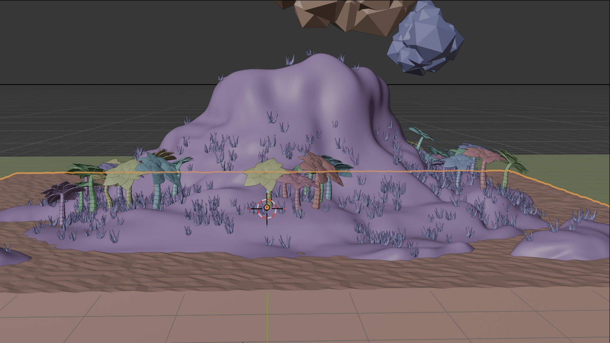

Concept Art · Animation Low-Poly
ÎLE
Scroll pour explorer ↓
ÎLE
DESERTE
Scroll pour explorer ↓
Low-poly Stylisé.
La simplicité comme langage.
Rôle
Modélisation · Lighting
|
Durée
3 Jours
|
Outils
Blender
|
Année
2025
01
Le Concept
Une île tropicale stylisée en low-poly animée, avec végétation, eau, nuages. Chaque élément naturel coexiste dans une esthétique intentionnellement simplifiée mais expressive.
 Vue d'ensemble · Style low-poly assumé
Vue d'ensemble · Style low-poly assumé
02
L'Approche Technique
Les matériaux et l'éclairage ont été travaillés pour maintenir une esthétique cohérente. La caméra effectue un mouvement contemplatif qui révèle progressivement l'île, mise en scène minimaliste mais efficace.

Animation caméra · Mouvement contemplatif
03
Le Résultat
Une animation qui prouve qu'un style graphique simple peut être riche en émotion — exploration de l'animation de caméra et de la composition stylisée.
Animation Finale · Rendu complet
3 jours.
De travail
100%
Fait main
1 île
Déserte
100%
Low-poly

← Précédent
Intérieur abandonné

Suivant →